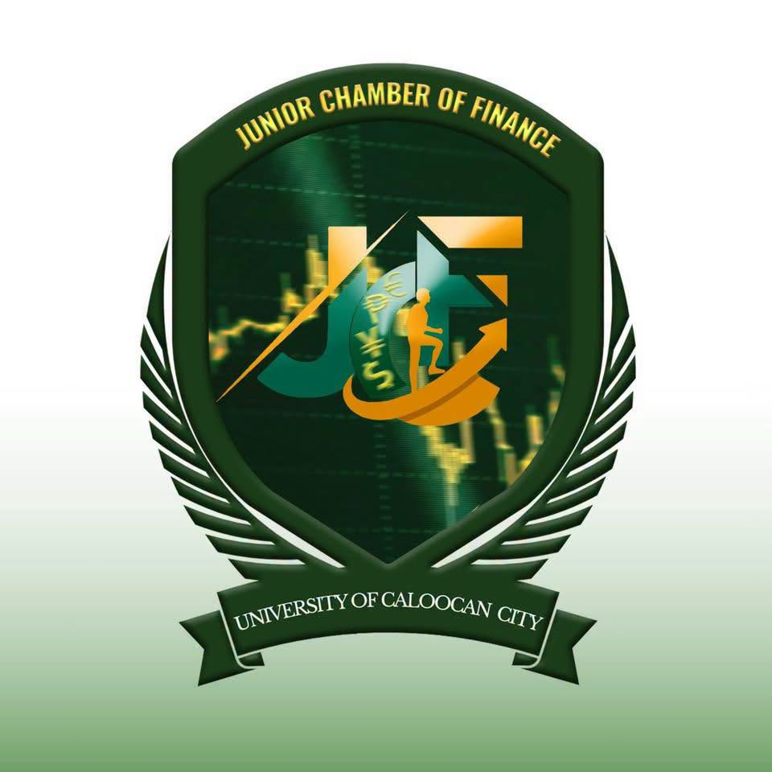
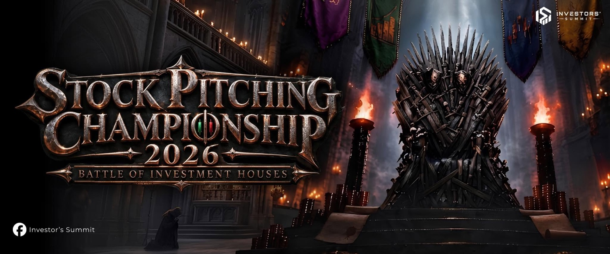
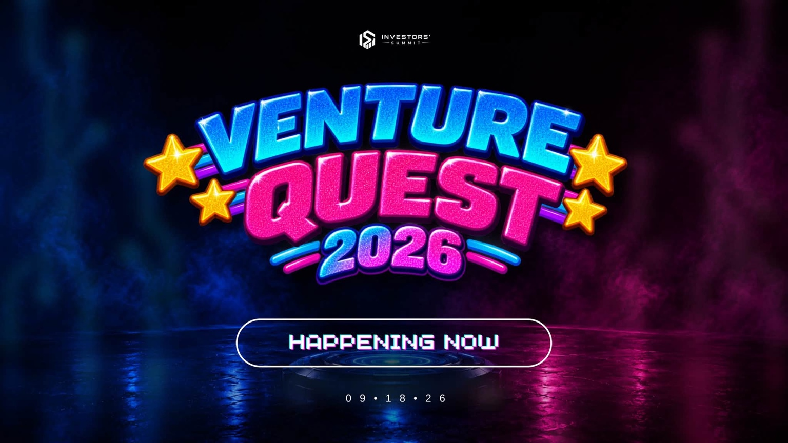
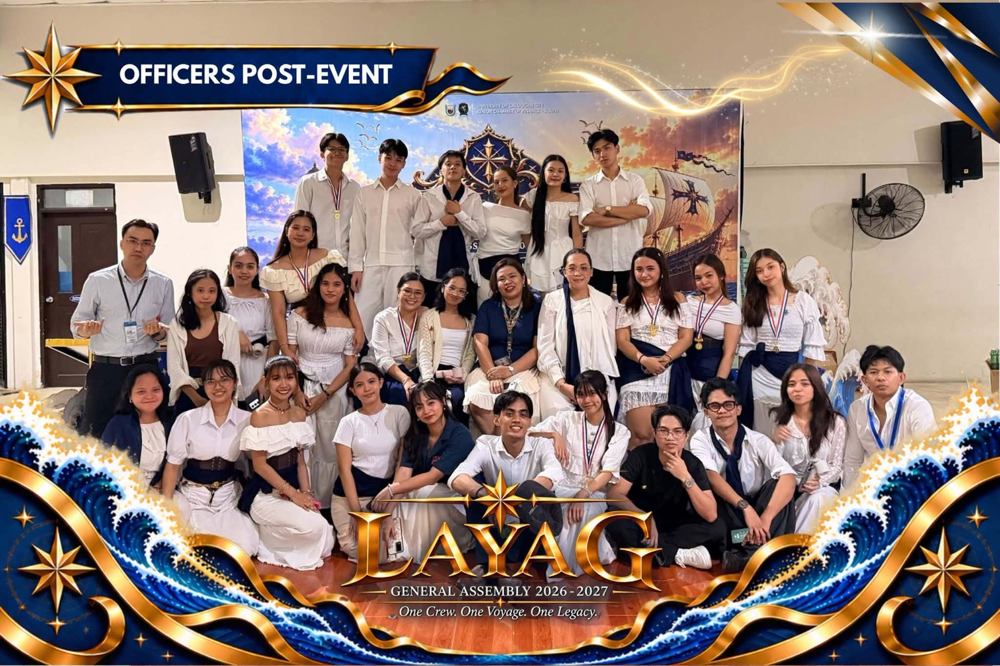
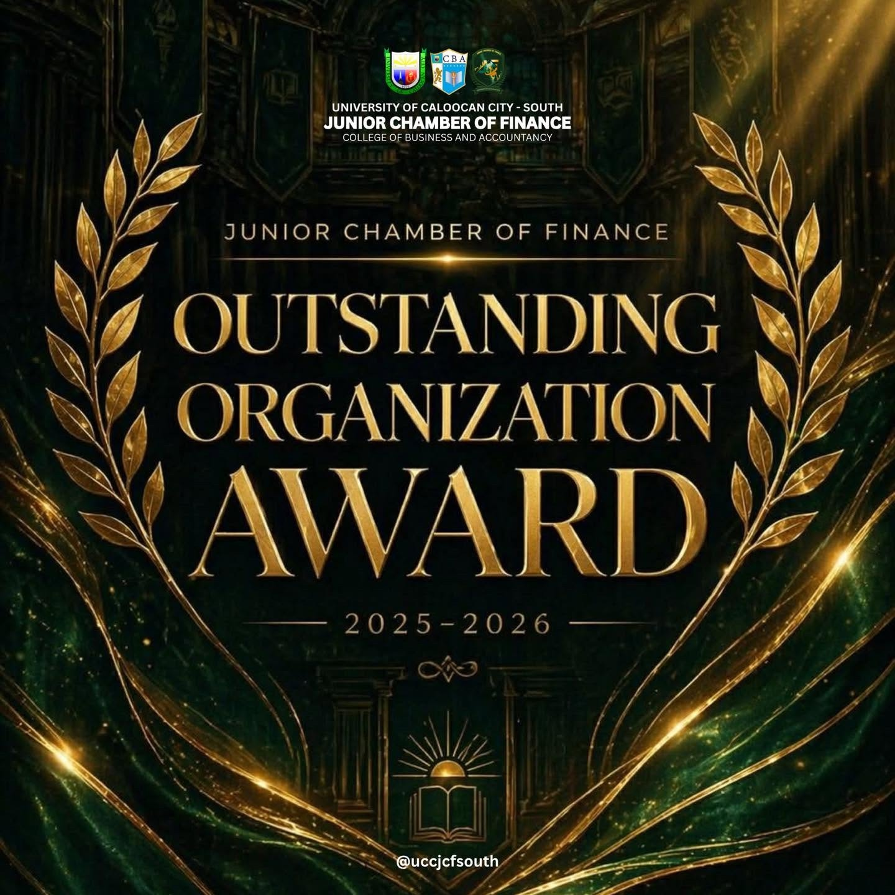
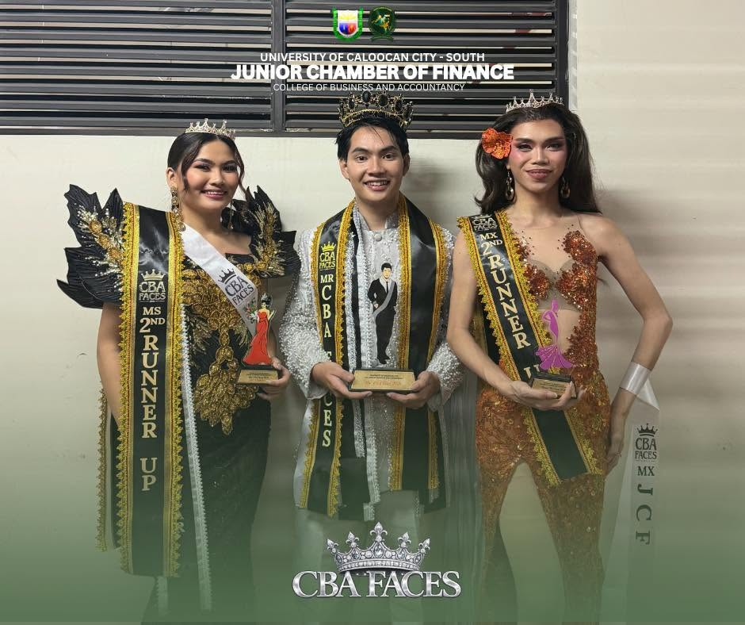

UPCOMING · OCT 24
Stock Pitching Championship
Battle of Investment Houses · Investors’ Summit 2026.
VIEW EVENT ↗
UNIVERSITY OF CALOOCAN CITY · SOUTH CAMPUS
Your community. Your journey. Your legacy.
JUNIOR CHAMBER OF FINANCE
UNIVERSITY OF CALOOCAN CITY
BEYOND THE NUMBERS. BEYOND THE ORDINARY.
A community in motion. Building future-ready Financialistas through opportunities, collaboration, and real-world learning.
01 / THE FINANCIALISTA PULSE
Real moments, real achievements, and the stories shaping our community.
Battle of Investment Houses · Investors’ Summit 2026.
VIEW EVENT ↗One Crew. One Voyage. One Legacy.
EXPLORE THE ARCHIVE ↗Season 2, Episode 01 — the importance of saving.
DISCOVER THE EPISODE ↗Schedules and faculty information will be published once verified.
OPEN ACADEMIC HUB ↗02 / WHERE WE COME TOGETHER
The experiences that bring Financialistas together.

INVESTORS’ SUMMIT
Battle of Investment Houses — October 24, 2026.
THE NEXT CHAPTER IS COMING.

INVESTORS’ SUMMIT
Play • Pitch • Prevail. The 2026 venture experience.

GENERAL ASSEMBLY 2026–2027
One Crew. One Voyage. One Legacy.
03 / JCF ORIGINAL SERIES
Stories we live. Choices we make. Lessons we keep.
NOW SHOWING · SEASON 02
EPISODE 01 • THE IMPORTANCE OF SAVING
Student stories about money, spending decisions, and why saving matters. Released July 31, 2026 on Facebook.
04 / OUR LIVING LEGACY
Every event. Every achievement. Every chapter.
Preserving the people, milestones, and stories that shaped JCF.
Investors’ Summit 2026
General Assembly 2026–2027
Championship 2026
05 / RECOGNIZING OUR PEOPLE
The achievements that deserve a permanent place in our story.

ORGANIZATIONAL EXCELLENCE
Academic Year 2025–2026

CBA FACES · STUDENT RECOGNITION
Carl Michael Timajo — Champion, Mr. CBA
Mari Rinna Martin — 3rd Runner-Up, Ms. CBA
Psyryz Ignacio — 3rd Runner-Up, Mx. CBA
06 / BUILT FOR YOUR EVERYDAY
Less searching. More learning. Everything in its place.
Select your year level to access the schedule hub.
Get to know the Financial Management professors and their academic roles.
Important dates, examination periods, and academic activities.
07 / LEARN BY DOING
Big ideas start with small calculations. Try our interactive savings simulator.
PROJECTED FUTURE VALUE
₱0Calculating your growth...
JUNIOR CHAMBER OF FINANCE · UCC SOUTH
We are the Junior Chamber of Finance, representing the Financial Management community at the University of Caloocan City – South Campus. Together, we learn, lead, create, and make every moment count.